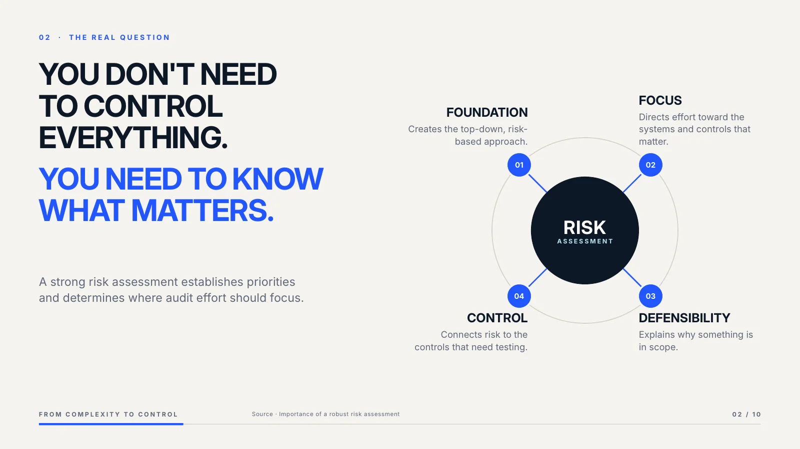
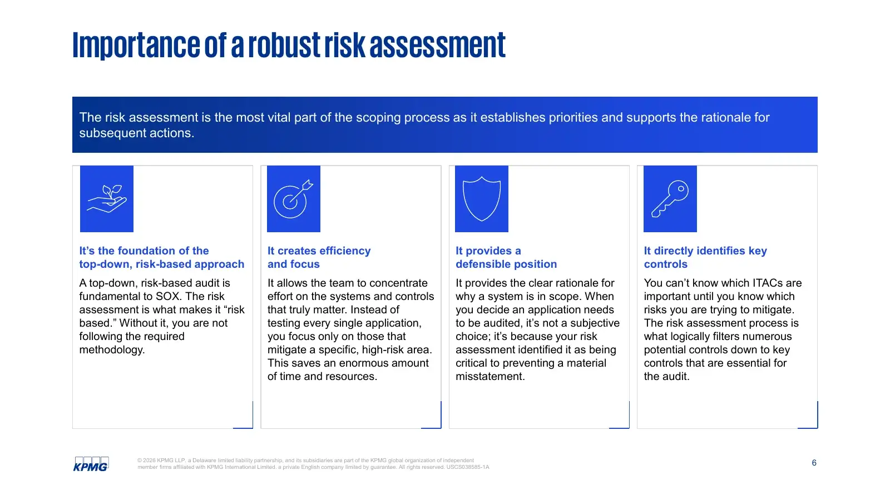

OriginalImportance of a robust risk assessment
→
AfterYou don’t need to control everything. You need to know what matters.


WhyA text-heavy four-column slide became one central risk system. The idea that everything depends on the risk assessment is now the layout itself.
- Hierarchy
- Four equal columns → one central idea
- Structure
- Four text cards → one radial system
- Content
- Paragraphs → four short consequences
- Motion
- Static → five-click radial build
- Editability
- Still 100% PowerPoint